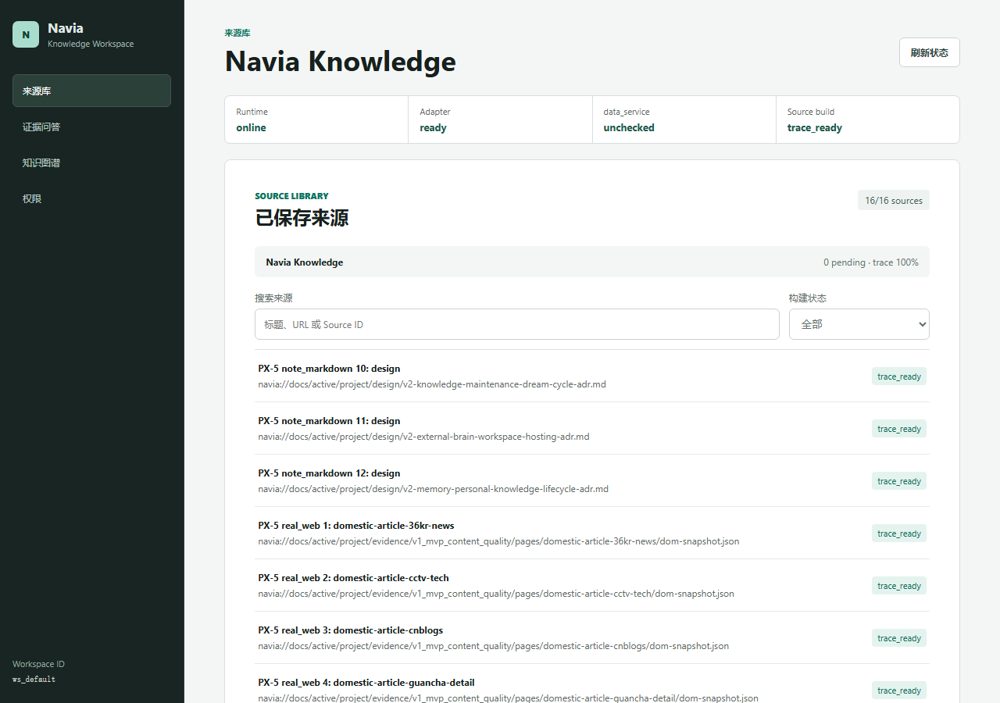
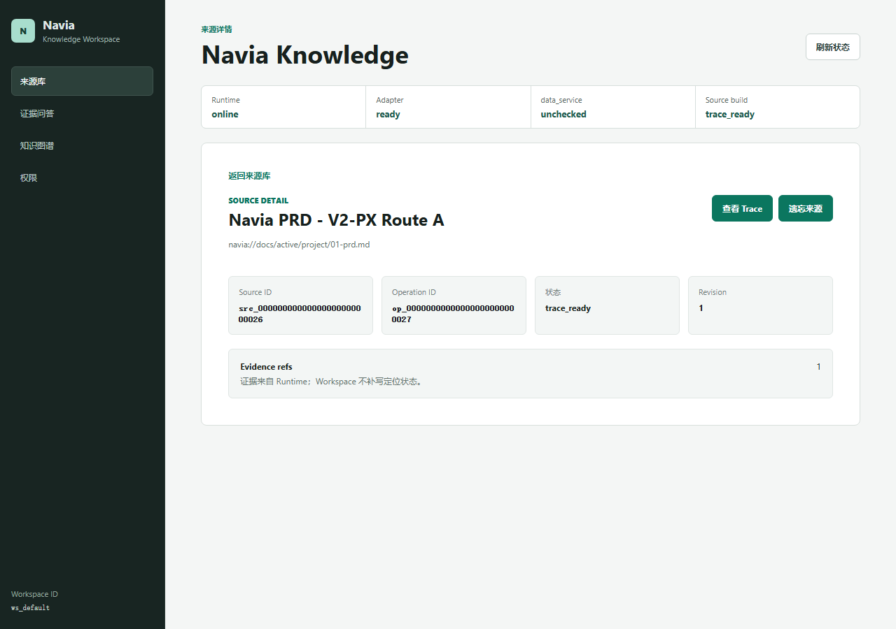
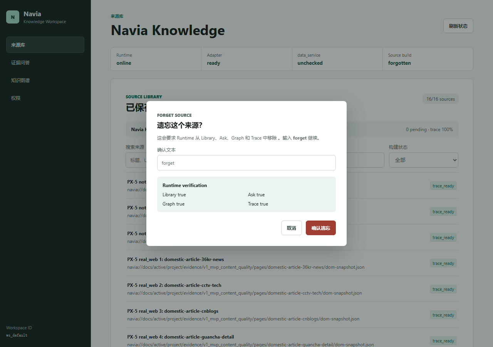

V2-PX-5 自动化验收候选
自动化 G1-G6 及 G7 机器部分通过；PX-6 人工核查待执行，因此最终报告保持未通过。
真实执行摘要
12 个真实字节来源，39 个结构化场景，77/77 Chrome 断言，Axe serious/critical 0/0，V2-7 24-source 回归通过。
用户路径证据




场景矩阵
| 场景 | 入口 | 路由 | 故障 | 结果 |
|---|
| px5_scenario_01 | open_workspace | source_library | none | 通过 |
| px5_scenario_02 | open_workspace | source_library | none | 通过 |
| px5_scenario_03 | view_source | source_detail | none | 通过 |
| px5_scenario_04 | view_source | source_detail | none | 通过 |
| px5_scenario_05 | view_source | source_detail | none | 通过 |
| px5_scenario_06 | open_in_workspace | ask | none | 通过 |
| px5_scenario_07 | open_in_workspace | source_detail | none | 通过 |
| px5_scenario_08 | direct_route | source_library | none | 通过 |
| px5_scenario_09 | direct_route | source_library | none | 通过 |
| px5_scenario_10 | direct_route | source_library | none | 通过 |
| px5_scenario_11 | direct_route | source_detail | none | 通过 |
| px5_scenario_12 | direct_route | source_detail | none | 通过 |
| px5_scenario_13 | direct_route | source_detail | none | 通过 |
| px5_scenario_14 | direct_route | ask | none | 通过 |
| px5_scenario_15 | direct_route | ask | none | 通过 |
| px5_scenario_16 | direct_route | ask | none | 通过 |
| px5_scenario_17 | direct_route | graph | none | 通过 |
| px5_scenario_18 | direct_route | graph | none | 通过 |
| px5_scenario_19 | direct_route | graph | none | 通过 |
| px5_scenario_20 | direct_route | permissions | none | 通过 |
| px5_scenario_21 | direct_route | permissions | none | 通过 |
| px5_scenario_22 | direct_route | permissions | none | 通过 |
| px5_scenario_23 | direct_route | source_library | none | 通过 |
| px5_scenario_24 | direct_route | source_library | none | 通过 |
| px5_scenario_25 | direct_route | source_detail | none | 通过 |
| px5_scenario_26 | permission | permissions | none | 通过 |
| px5_scenario_27 | permission | permissions | none | 通过 |
| px5_scenario_28 | permission | permissions | none | 通过 |
| px5_scenario_29 | forget | source_detail | none | 通过 |
| px5_scenario_30 | forget | source_detail | none | 通过 |
| px5_scenario_31 | forget | source_detail | none | 通过 |
| px5_scenario_32 | status_recovery | source_library | adapter_blocked | 通过 |
| px5_scenario_33 | status_recovery | source_library | data_service_unreachable | 通过 |
| px5_scenario_34 | status_recovery | source_library | source_failed | 通过 |
| px5_scenario_35 | status_recovery | source_library | runtime_offline | 通过 |
| px5_scenario_36 | direct_route | source_detail | none | 通过 |
| px5_scenario_37 | direct_route | source_detail | none | 通过 |
| px5_scenario_38 | direct_route | source_library | none | 通过 |
| px5_scenario_39 | direct_route | source_library | none | 通过 |
声明边界
本报告不是人工产品验收，不声明完整外脑、真实 data_service、RAG、自动遗忘或 V3 视频理解完成。